측량및지형공간정보기사 (2008-09-07 기출문제)
1과목: 측지학 및 위성측위시스템
1. 극심입체 투영법에 의해 위도 80° 이상의 양극지역의 지도 좌표를 표시하는데 사용되는 것은?
- UPS좌표
- 3차원극좌표
- UTM좌표
- 가우스그뤼거좌표
(정답률: 60%)

2. GPS를 이용한 기준점측량의 계획을 수립하려고 한다. 이때 위성의 이용 가능 시간대와 배치 상황도를 참고하여 관측 계획 시 고려하지 않아도 되는 것은?
- 상공 시계 확보를 위한 선점 위치의 지상 장애물 분포 상황
- 임계 고도각 이상에 존재하는 사용 위성의 개수
- 수신에 사용할 각 위성의 번호 파악
- 관측 예정 시간대의 DOP 수치 파악
(정답률: 55%)
3. 반송파의 정확도가 1 mm라면 이중차분된 반송파의 정확도는 얼마인가?
- 1 mm
- 2 mm
- 3 mm
- 4 mm
(정답률: 46%)
4. 자기 폭풍의 주요 원인으로 가장 적합한 것은?
- 해양 지각 변동
- 태양흑점
- 달의 공전
- 지구 내부 물질의 분포
(정답률: 50%)
5. 전송파(carrier)에 대한 미지의 수로서, 위성과 수신기 안테나 간 파장의 개수를 무엇이라 하는가?
- 모호정수
- AS
- 다중경로
- 삼중차
(정답률: 64%)
6. 다음 지오이드와 관련된 설명 중 틀린 것은?
- 지오이드는 해양에서는 평균 해수면과 일치한다.
- 지오이드에서의 위치에너지는 0이므로 지오이드를 등포텐셜면이라 한다.
- 지구상 어느 한 점에서 타원체의 법선과 지오이드의 법선과의 차이를 연직선 편차라 한다.
- 지오이드는 극지방을 제외한 전 지역에서 회전타원체와 일치한다.
(정답률: 알수없음)
7. 다음 중 DGPS에 의해서 소거되지 않는 오차는?
- 전리층 오차
- 위성시계오차
- 사이클 슬립
- 위성계도오차
(정답률: 39%)
8. DGPS 측량방법을 사용하는 이유로 가장 적합한 것은?
- 보다 정확한 위치를 계산하기 위하여
- 보다 빠른 계산을 위하여
- 보다 연속적인 위치 계산을 위하여
- 보다 기선이 긴 곳에서의 위치 계산을 위하여
(정답률: 70%)
9. 지구타원체면 상에서의 중력이 있어, 그 점의 위도가 적도에 가까울수록 중력은?
- 일반적으로 증가한다.
- 일반적으로 감소한다.
- 증가하기도 하고 감소하기도 한다.
- 위도에 관계없이 일정하다.
(정답률: 알수없음)
10. GPS로부터 획득할 수 있는 정보와 거리가 먼 것은?
- 공간상 한 점의 위치
- 지각의 변동
- 해수면의 온도
- 정확한 시간
(정답률: 62%)
11. 구면삼각형에 관한 설명으로 옳지 않은 것은?
- 구면삼각형은 지표상 세 점을 지나는 세 개의 대원을 세 변으로 하는 삼각형이다.
- 구면삼각형에서는 내각의 합이 180° 보다 크다.
- 구면삼각형의 계산에 르장드르(Legendre)의 정리가 널리 사용된다.
- 평면삼각측량에서도 구과량은 무시할 수 없으므로 구면삼각형의 면적 대신 평면삼각형의 면적을 사용해서는 안된다.
(정답률: 54%)
12. 우리나라에서 편각이 +30° 인 어느 지점의 자침이 그림과 같을 때 진북방향을 가리키는 것은?
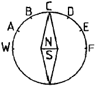
- A
- B
- C
- D
(정답률: 알수없음)
13. 수십억 광년 떨어진 준성(quasar)을 이용하여 매우 정밀하게 거리를 측정할 수 있어 국가좌표계 결정과 지각변동 산출에 활용되는 것은?
- VLBI
- SLR
- SPOT
- LORAN
(정답률: 55%)
14. 다음 중 멀티패스(multipath)의 영향을 최소화 할 수 있는 방법이 아닌 것은?
- DGPS 기술을 사용한다.
- Choke Ring 안테나를 사용한다.
- 절대측위에 의한 위치 계산시 반송파와 코드를 조합하여 해석한다.
- 높은 건물이 둘러싸인 장소에 GPS 관측점의 설치를 피한다.
(정답률: 50%)
15. 거리 측저의 정밀도를 1/107 까지 허용한다면 지구의 표면을 평면으로 생각할 수 있는 측정거리의 한계는? (단, 지구의 곡률반경은 6,370km로 한다.)
- 약 7km
- 약 11km
- 약 22km
- 약 35km
(정답률: 62%)
16. 위성 자체에 전파원이 있는 것이 아니라 반사프리즘이 위성에 탑재되어 펄스광의 왕복시간을 측정함으로써 거리를 측량하게 할 수 있는 관측법은?
- 전파 관측법
- 음파 관측법
- 레이저 관측법
- 카메라 관측법
(정답률: 60%)
17. RINEX 형식이 포함하는 내용으로 관계가 먼 것은?
- GPS 위성의 관측자료 파일
- GLONASS 위성의 항법 메시지 파일
- GEO(Geostationary) 위성의 항법 메시지 파일
- IKONOS 위성의 항법 메시지 파일
(정답률: 55%)
18. 다음 중 천문좌표계가 아닌 것은?
- 지평좌표계
- 적도좌표계
- 황도좌표계
- 3차원 직각좌표계
(정답률: 75%)
19. 다음 중 물리학적 측지학에 해당되지 않는 것은?
- 중력 측정
- 천체의 고도 측정
- 지자기 측정
- 지진파 측정
(정답률: 50%)
20. GNSS(Global Navigational Satellite System) 위성과 관련 없는 것은?
- GPS
- KH-11
- GLONASS
- Galileo
(정답률: 67%)
2과목: 응용측량
21. 하천측량에 관한 다음 설명 중 옳지 않은 것은?
- 평수위란 어떤 기간의 수위 중 이보다 높은 수위와 낮은 수위의 관측회수가 같은 수위이다.
- 평균수위란 어떤 기간의 관측수위를 합계하여 관측 회수로 나누어 평균한 수위로 일반적으로 평수위보다 약간 낮고 심천측량의 기준이 된다.
- 수위솬측소는 상ㆍ하류의 길이가 약 100m 정도는 직선이어야 하고 유속이 크지 않아야 한다.
- 수위관측소는 평시에는 홍수 때보다 수위표를 쉽게 읽을 수 있는 곳이어야 한다.
(정답률: 17%)
22. 하천측량에서 수애선(水涯線)의 측량에 대한 설명으로 틀린 것은?
- 수애선은 하천 수위에 따라 변동한흔 것으로 갈수위에 의하여 정해진다.
- 심천측량에 의한 방법을 이용할 때에는 수위의 변화가 적은 시기에 심천측량을 행하여 하천의 횡단면도를 작성한다.
- 수애선의 측량에는 심천측량에 의한 방법과 동시관측에 의한 방법이 있다.
- 수면과 하안(河岸)과의 경계선을 수애선이라 한다.
(정답률: 29%)
23. 완화곡선 직교좌표에서 (x2+y2)2=a2(x2-y2)의 방정식을 갖는 곡선은?
- 3차 포물선
- 클로소이드(clothoid) 곡선
- 렘니스케이트(lemniscate) 곡선
- 2차 포물선
(정답률: 알수없음)
24. 복심곡선의 교각 I = 95° 30′ 이고 첫 번째 원곡선의 교각과 반지름이 각각 I1 = 30° 15′, R1 = 300m, 두 번째 원곡선의 반지름이 R2 = 400m라 할 때 복심곡선의 전체 길이는?
- 455.5m
- 613.9m
- 666.7m
- 702.5m
(정답률: 50%)
25. 지상측량에 의한 결괄르 터널 내부와 동일하게 설정하기 위한 측량을 무엇이라고 하는가?
- 갱외 중심선측량
- 갱내 수준측량
- 갱내외 연결측량
- 터널 좌표 측량
(정답률: 64%)
26. 캔트(cant)에 대한 설명으로 옳은 것은?
- 직선과 곡선의 연결부분의 명칭이다.
- 토량을 계산하는 방법의 일종이다.
- 곡선부의 안쪽과 바깥쪽의 높이 차이다.
- 완화곡선의 일종이다.
(정답률: 84%)
27. 지적측량의 순서로 옳은 것은?
- 계획수립 - 선점 및 조표 - 준비 및 현지답사 - 성과표 작성 - 관측 및 계산
- 준비 및 현지답사 - 계획수립 - 선점 및 조표 - 성과표 작성 - 관측 및 계산
- 준비 및 현지답사 - 선점 및 조표 - 계획수립 - 관측 및 계산 - 성과표 작성
- 계획수립 - 준비 및 현지답사 - 선점 및 조표 - 관측 및 계산 - 성과표 작성
(정답률: 43%)
28. 수심 h인 하천의 유속측정에서 수면으로부터 0.2h, 0.4h, 0.6h, 0.8h 깊이의 유속이 각각 0.380m/sec, 0.360m/sec, 0.340m/sec, 0.320m/sec 일 때, 4점법에 의한 평균유속은 얼마인가?
- 0.334m/sec
- 0.345m/sec
- 0.350m/sec
- 0.355m/sec
(정답률: 50%)
29. 경관표현방법 중 몽타주가 비교적 용이하고 장관도(panrama)경관 및 이동경관 등 시야가 연속적으로 변화하는 동경관을 처리할 수 있는 방법은?
- 투시도에 의한 방법
- 색채모의관측에 의한 방법
- 비디오영상에 의한 방법
- 사진몽타주에 의한 방법
(정답률: 47%)
30. 곡선반경이 500m 인 원곡선을 90km/h로 주행하고자 할 때 캔트(C)는 얼마인가? (단, 궤간(b)는 1.607mm, g = 9.8m/sec2)
- 140m
- 136m
- 131m
- 126m
(정답률: 46%)
31. 삼각점을 이용하여 갱문 A와 갱문 B의 좌표값을 구하여 다음 표의 결과를 얻었다. 그 AB의 거리와 방위각은?
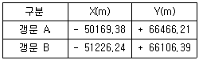
- 거리 : 1116.43m, 방위각 : 18° 48′06″
- 거리 : 1116.43m, 방위각 : 198° 48′06″
- 거리 : 380.55m, 방위각 : 18° 48′06″
- 거리 : 380.55m, 방위각 : 198° 48′06″
(정답률: 64%)
32. 그림과 같은 계곡에 150m 높이의 댐을 축조하여 140m까지 저수한다면 저수량은 얼마인가? (단, 각 등고선으로 둘러싸인 내부면적은 아래와 같고 각주공식을 이용할 것)
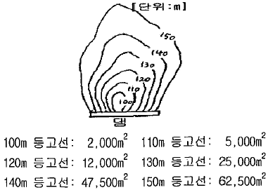
- 525,000m3
- 645,000m3
- 1,011,670m3
- 1,208,300m3
(정답률: 47%)
33. 하구 심천측량에 관한 설명 중 잘못된 것은?
- 하구 심천측량은 하구 부근 하저 및 해저의 지형을 조사한다.
- 하구의 항만시설, 해안보전 시설의 설계자료로 사용된다.
- 조위를 관측하고 실측한 수심을 기본수준면으로부터의 수심으로 보정하여 심천측량의 정확도를 높인다.
- 해안에서는 수심 100m 되는 앞바다까지를 측량구역으로 한다.
(정답률: 0%)
34. 터널측량을 지상측량과 비교했을 때의 특징적인 내용이 아닌 것은?
- 망원경의 십자선을 조명 장치 등으로 구분이 용이하여야 한다.
- 측점은 천정에 설치하기도 한다.
- 갱내의 곡선 설치는 장소가 협소하므로 편각법을 주로 사용한다.
- 갱내는 좁고, 어두우며, 급경사인 경우가 많으므로 특별한 기계장치의 조합이 필요하다.
(정답률: 46%)
35. 아래 유토곡선에 대한 설명으로 옳은 것은?
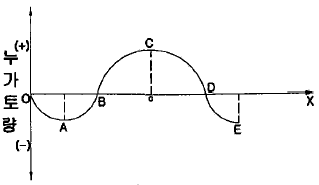
- 상향부분 A-C 구간은 성토구간을 나타낸다.
- 기선 OX상의 B, D에서는 토량의 이동이 없다.
- C점은 성토에서 절토로 변하는 점이다.
- 위 곡선은 결과적으로 토량이 남는다는 것을 의미한다.
(정답률: 50%)
36. 완화곡선의 성질을 설명한 것으로 틀린 것은?
- 완화곡선의 접선은 시점에서 직선에 접한다.
- 곡선반경은 완화곡선의 시점에서 원곡선 R로 된다.
- 완화곡선의 접선은 종점에서 원호에 접근한다.
- 완화곡선에 연한 곡선반경의 감소율은 캔트의 증가율과 같다.
(정답률: 72%)
37. 면적이 500m2인 지역을 0.1m2 까지 정확하게 측정하려고 한다. 세 개의 삼각형으로 나누어 거리관측을 하고 삼변법에 의하여 면적을 구할 때 거리관측 정확도의 최대값은?
- 1/30000
- 1/40000
- 1/50000
- 1/60000
(정답률: 17%)
38. 클로소이드의 성질에 대한 설명으로 잘못된 것은?
- 클로소이드는 나선의 일종이다.
- 모든 클로소이드는 닮은꼴이다.
- 모든 클로소이드의 요소는 길이의 단위를 갖는다.
- 어떤 점에 관한 클로소이드 요소 중 두 가지가 정해지면 클로소이드의 크기와 위치가 정해지며 다른 요소들도 구할 수 있다.
(정답률: 54%)
39. 지하시설물 관측방법에서 원래 누수를 찾기 위한 기술로 수도관로 중 PVC 또는 플라스틱관을 찾는데 이용되는 관측방법은?
- 전기관측법
- 자장관측법
- 음파관측법
- 탄성파관측법
(정답률: 47%)
40. 그림과 같은 측량 결과를 심프슨의 제1법칙으로 면적을 구한 값은?
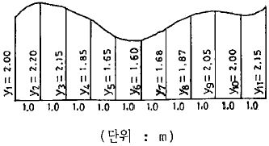
- 17.770m2
- 18.664m2
- 19.097m2
- 20.125m2
(정답률: 60%)
3과목: 사진측량 및 원격탐사
41. 초점거리 150mm, 사진크기 23cm×23cm 인 카메라로 평지를 촬영하였을 때 주점기선 길이가 46mm 이었다. 인접 사진과의 종중복도는?
- 50%
- 60%
- 70%
- 80%
(정답률: 25%)
42. 해석적 항공삼각측량에 사용되는 방법으로 블록을 구성하는 여러 장의 사진을 동시에 조정하는데 적합한 것은?
- 다항식 조정법
- 독립입체모델법
- 광속조정법
- 기본조정법
(정답률: 10%)
43. GIS에서 데이터베이스관리시스템(DBMS)을 사용하는 이유가 아닌 것은?
- DBMS는 고차원의 검색 언어를 지원한다.
- DBMS는 다양한 공간분석 기능을 갖고 있다.
- DBMS는 매우 많은 양의 데이터를 저장하고 관리할 수 있다.
- DBMS는 하나의 데이터베이스를 여러 사용자가 동시에 사용할 수 있게 한다.
(정답률: 37%)
44. 항공사진 또는 위성영상의 기하보정 과정에서 최종 결과영상을 제작하는데 필요한 재배열(Resampling) 방법 중 원천 영상자료의 화소값의 변경을 방지할 수 있고 가장 계산이 빠른 방법은?
- Nearest-neighbor interpolation
- Bilinear interpolation
- Bicubic interpolation
- Non-linear interpolation
(정답률: 60%)
45. 원격탐사의 자료변환 시스템에 있어서 기하학적인 오차나 왜곡의 원인이 아닌 것은?
- 인공위성의 크기에 기인한 오차
- 센서의 기하학적 특성에 기인한 오차
- 플랫폼의 자세에 기인한 오차
- 지표의 기복에 기인한 오차
(정답률: 72%)
46. 다음 중 GIS의 주요 기능이 아닌 것은?
- 자료 처리
- 자료 출력
- 자료 복원
- 자료 관리
(정답률: 67%)
47. 다음 중 객체지향형 데이터베이스관리시스템의 특징이 아닌 것은?
- 자료의 갱신이 용이하다.
- 자료뿐만 아니라 자료의 구성을 위한 방법론도 저장이 가능하다.
- 지도의 정보를 도형과 속성으로 나누어 유형별로 테이블에 저장한다.
- 객체는 독립된 동질성을 가진 개체이며, 계급적인 의미를 갖는다.
(정답률: 43%)
48. 수치지도 제작으르 위한 TM 투영법을 투영성질 및 투영면 형태에 따라 분류하면 어느 것에 해당되는가?
- 등각 횡원통도법
- 등각 원추도법
- 등적 횡원통도법
- 등적 원추도법
(정답률: 60%)
49. 다음의 데이터 형식 중 GIS에서 사용하는 도형정보나 수치 지도의 호환을 위하여 사용되는 형식이 아닌 것은?
- ASCII 형식
- DXF 형식
- SDTS 형식
- SHP 형식
(정답률: 50%)
50. 항공사진의 판독에 대한 일반적인 설명으로 틀린 것은?
- 철도는 보통 규칙적인 곡선이나 직선에 착안하여 판독한다.
- 고궁이나 사원은 경내의 산림이나 특징이 있는 지붕의 형으로부터 판독되는 경우가 있다.
- 호소, 댐 등의 수면은 회색에서 흑색으로 찍히나 태양의 반사광에 따라 백색으로 찍힐 수도 있다.
- 발아기의 활엽수림은 침엽수림보다 검게 찍히며 수관(樹冠)이 뾰족하기 때문에 구별하기 쉽다.
(정답률: 70%)
51. 항공사진에서 렌즈중심으로부터 사진면에 내린 수선의 발, 즉 렌즈의 광축과 사진면이 교차하는 점은?
- 등각점
- 수직점
- 연직점
- 주점
(정답률: 47%)
52. 입체사진의 표정에 관한 설명 중 옳지 않은 것은?
- 내부표정이란 도화기의 투영기에 촬영 당시와 똑같은 상태로 양화건판을 정착시키는 작업으로서 초점거리와 주점에 대한 작업이다.
- 상호표정이란 사진상의 종시차 및 횡시차를 소거하여 목표 지형물의 상대적 위치를 맞추는 작업으로 인자로는 x, ø, λ, by, bx, bz 가 있다.
- 절대표정이란 입체모델의 축척, 수준면, 위치를 결정하는 작업으로 표정인자로는 축척(λ), 회전(ø, Ω, K), 변위(Cx, Cy, Cz)가 있다.
- 접합표정이란 연속된 입체사진을 접합시켜 공통된 좌표계를 형성하기 위한 표정법으로 표정인자는 축척(λ), 회전(x, ø, ω), 변위(Sx, Sy, Sz)가 있다.
(정답률: 54%)
53. 촬영방향에 따라 분류할 때 사진상에 지평선이 나타나 있는 항공사진은 어느 사진에 속하는가?
- 수직사진
- 고각도 경사사진
- 저각도 경사사진
- 편각사진
(정답률: 60%)
54. 축척 1/10000 으로 촬영한 연직사진에 대하여 촬영에 사용한 사진기의 초점거리 153mm, 사진크기 23cm×23cm, 종중복도 70%일 때의 기선 고도비는?
- 0.45
- 0.85
- 1.40
- 2.85
(정답률: 10%)
55. 항공사진측량을 위하여 초점거리 200mm의 사진기로 1:20000 입체사진을 촬영했을 때 일반적으로 허용되는 정확도의 범위를 올바르게 산정한 것은?
- 수평위치 X, Y 정확도는 0.2~0.6m, 수직위치 H 정확도는 0.4~0.8m
- 수평위치 X, Y 정확도는 1.2~1.4m, 수직위치 H 정확도는 1.2~1.6m
- 수평위치 X, Y 정확도는 0.6~1.0m, 수직위치 H 정확도는 0.2~0.6m
- 수평위치 X, Y 정확도는 0.2~0.4m, 수직위치 H 정확도는 0.8~1.2m
(정답률: 46%)
56. 다음 중 카메론 효과가 발생하는 경우는?
- 입체사진 상의 이동 물체가 촬영기선 방향으로 이동한 경우
- 입체사진 상의 이동 물체가 촬영기선의 직각 방향으로 이동한 경우
- 도화기의 부점이 물체보다 위에 떠 있을 경우
- 도화기의 부점이 물체보다 아래에 가라앉아 있을 경우
(정답률: 34%)
57. 초점거리 150mm의 카메라로 1/20000 축척의 항공사진을 수직으로 촬영하고 이 사진의 연직점으로부터 어떤 건물의 정상을 측정하였더니 39mm, 이 건물의 하단으로부터 정상까지의 변위량이 1.3mm였다. 이 건물의 높이는?
- 50m
- 100m
- 150m
- 200m
(정답률: 55%)
58. 원격탐사센서가 각 전자기복사에너지 파장을 선택적으로 관측할 수 있는 이유로 적당한 것은?
- 대기의 전자기파 에너지 흡수 작용
- 대기의 전자기파 에너지 산란 작용
- 지표의 전자기파 에너지 반사 작용
- 지표의 전자기파 에너지 전도 작용
(정답률: 42%)
59. 수치지도의 작성 순서에 대한 경로를 옳게 나열한 것은?
- 작업계획의 수립 - 자료의 취득 - 지형공간정보의 표현 - 품질검사
- 작업계획의 수립 - 지형공간정보의 표현 - 자료의 취득 - 품질검사
- 자료의 취득 - 지형공간정보의 표현 - 품질검사 - 작업계획의 수립
- 자료의 취득 - 품질검사 - 작업계획의 수립 - 지형공간정보의 표현
(정답률: 73%)
60. 렌즈왜곡, 대기굴절, 지구곡률, 필름변형보정은 어떤 표정 작업 중의 일부인가?
- 내부표정
- 절대표정
- 상호표정
- 접합표정
(정답률: 70%)
4과목: 지리정보시스템
61. 측량오차의 일반적인 성질이 아닌 것은?
- 작은 오차가 생기는 확률은 큰 오차가 생기는 확률보다 크다.
- 같은 크기의 (+), (-) 오차가 생길 확률은 거의 같다.
- 극히 큰 오차가 발생할 확률은 거의 없다.
- 오차의 일반법칙 적용은 정오차에도 적용된다.
(정답률: 알수없음)
62. 축척 1:5000 지형도에서 그림과 같이 주곡선 상의 두 점 A, B 사이의 도상거리가 2cm인 경우 이 두 점 사이의 실제 경사는?
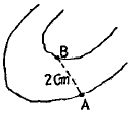
- 1%
- 5%
- 10%
- 25%
(정답률: 알수없음)
63. 콘크리트 구조물의 부피를 계산하기 위해 가로(I), 세로(w), 높이(h)를 측정한 결과가 I=30m±0.02m, w=15m±0.03m, h=20m±0.⑤m 일 때 구조물에 포함된 오차는 얼마인가?
- ±0.00003m3
- ±3.29m3
- ±15.11m3
- ±29.43m3
(정답률: 20%)
64. 그림과 같은 결함트래버스 측량의 측각오차식으로 옳은 것은? (단, n은 변의 수, [α]는 측정각의 합)
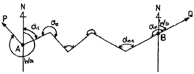
- △α = Wa - Wb + [α] - 180° (n-1)
- △α = Wa - Wb + [α] - 180° (n+1)
- △α = Wa - Wb + [α] - 180° (n-3)
- △α = Wa - Wb + [α] - 180° (n+3)
(정답률: 40%)
65. 지형도를 이용하여 구할 수 있는 것으로 가장 거리가 먼 것은?
- 종ㆍ횡단면도의 작성
- 정지공사에 따른 토량 계산
- 어느 지점 표고의 정밀 산출
- 노선의 도상선정
(정답률: 39%)
66. 다각측량에서 절점간의 평균거리가 200m이고 내각의 각관축 오차가 ±20″ 라고 할 때 각관측과 거리관측의 정확도를 같게 하기 위하여는 거리관측 오차를 얼마로 하여야 하는가?
- ±0.5cm
- ±1cm
- ±2cm
- ±4cm
(정답률: 34%)
67. 어느 지점의 각을 8회 측정하여 평균제곱근 오차 ±0.7″를 얻었다. 같은 조건으로 관측하여 ±0.3″ 의 평균제곱근 오차를 얻기 위하여는 몇 회 측정하여야 하는가?
- 18회
- 24회
- 32회
- 44회
(정답률: 50%)
68. 폐합트래버스를 측량하여 계산한 결과 측선길이의 합이 267.172m, 위거의 합이 +0.011m, 경거의 합이 -0.024m 일 때 폐합오차의 폐합비는 얼마인가?
- 0.035, 1/20600
- 0.026, 1/10300
- 0.187, 1/1000
- -0.013, 1/500
(정답률: 57%)
69. 각측정의 조정조건 중 잘못된 것은?
- 평반기포관이 수직축에 수평이어야 한다.
- 십자종선은 수평축에 수직이어야 한다.
- 사준선은 수평축의 직교평면 내에 있게 한다.
- 수평축은 수직축에 직교하여야 한다.
(정답률: 0%)
70. 기지점 A에서 미지점 B까지의 거리와 방위각을 측정한 결과가 다음과 같을 때 B점의 좌표는?
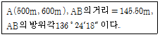
- (600.330m, 494.624m)
- (494.624m, 600.330m)
- (700.330m, 394.624m)
- (394.624m, 700.330m)
(정답률: 50%)
71. 수준측량에서 우연오차에 해당 되는 것은?
- 지구의 곡률에 의한 오차
- 빛의 굴절에 의한 오차
- 수준척의 길이가 표준척과 약갼 틀리는 오차
- 십자선의 굵기에 의해 생기는 읽음 오차
(정답률: 67%)
72. 다음 수준측량의 용어 설명 중 틀린 것은?
- 전시 : 표고를 구하려는 점에 세운 표척의 눈금을 읽은 값
- 후시 : 측량해 나가는 방향을 기준으로 기계의 후방을 시준한 값
- 이기점 : 기계를 옮기기 위항혀 어떠한 점에서 전시와 후시를 모두 취하는 점
- 중간점 : 어떤 지점의 표고를 알기 위하여 표척을 세워 전시를 취하는 점
(정답률: 69%)
73. 평판을 설치하는 조건 중 가장 오차에 영향을 크게 미치는 것은 무엇인가?
- 수평맞추기
- 중심맞추기
- 방향맞추기
- 좌표맞추기
(정답률: 70%)
74. A, B, C 세 점에서 삼각수준측량에 의해 P점 높이를 구한 결과 각각 365.13m, 365.19m, 365.02m 이었다. 그 거리가
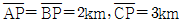
일 때 P점의 최확값은?- 365.125m
- 365.425m
- 365.824m
- 366.180m
(정답률: 50%)
75. 삼각측량의 결과가 그림과 같을 때 방위각 TBA와 TCA는?
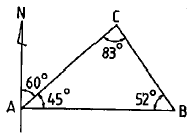
- 195° 240°
- 285°, 330°
- 195°, 330°
- 285°, 240°
(정답률: 8%)
76. 조정이 복잡하고 포괄면적이 적으며 시간과 비용이 많이 요하는 것이 단점이나 정확도가 가장 높은 삼각망은?
- 단열 삼각망
- 유심 삼각망
- 사변형 삼각망
- 결합 삼각망
(정답률: 82%)
77. 미지수 x, y를 포함하고 있는 다음과 같은 비선형방정식이 있다. 최소제곱조정을 위하여 초기값을 x=1, y=1이라고 가정할 경우 첫 번째 반복(iteration)에 의한 x, y의 추정값은 얼마인가?
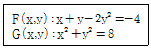
- x=2.25, y=2.75
- x=2.35, y=2.85
- x=2.25, y=2.95
- x=2.15, y=2.65
(정답률: 알수없음)
78. 한 측선을 20m의 줄자로 관측하여 120m를 얻었다. 만약 1회의 관측에 +5mm 누적오차와 ±6mm의 우연오차가 있다고 하면 정확한 거리는 다음 어느 것인가?
- 120.036m±0.015m
- 120.036m±0.012m
- 120.030m±0.015m
- 120.030m±0.012m
(정답률: 알수없음)
79. C점에서 ∠PCQ=θ 각을 측량하려 했으나, P 및 Q점을 시준할 수 없어서 트랜싯을 B점에 옮겨 세우고, 다음과 같은 편심관측을 하였다. ∠PCQ=θ의 값은? (단, T=125°, α=63°, e=9m, Si=2km, S2=3km)
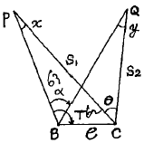
- 63° ⑤′ 34″
- 63° 03′ 34″
- 62° 56′ 26″
- 62° 54′ 26″
(정답률: 30%)
80. 토탈스테이션의 기능이 아닌 것은?
- EDM이 갖고 있는 거리 측정 기능
- 디지털 데오도라이트가 갖고 있는 측각 기능
- 각과 거리 측정에 의한 좌표 계산 기능
- 디지털구적기가 갖고 있는 면적 측정 기능
(정답률: 55%)
5과목: 측량학
81. 다음 중 기본측량 성과의 고시 사항이 아닌 것은?
- 임시로 설치한 측량표의 수
- 측량의 종류
- 측량실시의 시기 및 지역
- 측량성과의 보관장소
(정답률: 40%)
82. 다음 중 지도도식규칙에 따르지 않아도 되는 경우는?
- 군사훈련을 위한 군사용 지도
- 기본측량의 성과로서 지도를 간행하는 경우
- 공공측량의 성과를 간접으로 이용하여 지도에 관한 간행물을 발간하는 경우
- 기본측량의 성과를 직접으로 이욯아여 지도에 관한 간행물을 발간하는 경우
(정답률: 67%)
83. 현재 측량기술자가 측량기술경력증을 발급 받고자 할 때 신청서를 어느 기관에 제출하여야 하는가?
- 국토해양부
- 국토지리정보원
- 대한측량협회
- 지방국토관리청
(정답률: 60%)
84. 공공측량의 측량성과와 측량기록의 사본을 교부 받고자 하는 자는 어디에 신청하여야 하는가?
- 공공측량작업기관
- 국토지리정보원
- 시ㆍ도지사
- 공공측량계획기관
(정답률: 55%)
85. 측량업의 양도, 법인의 합병 등으로 측량업자의 지위를 승계한 자는 그 승계사유가 발생한 날로부터 최대 몇 일이내에 신고하여야 하는가?
- 60일
- 30일
- 20일
- 10일
(정답률: 60%)
86. 다음 측량표 중 임시설치 표지에 해당되는 것은?
- 도근점표석(圖根點標石)
- 표기(標旗)
- 측량표지막대
- 기선표석(基線標石)
(정답률: 72%)
87. 국토지리정보원장이 행하는 지도 등의 심사 사항이 아닌 것은?
- 도곽설정, 축척 및 투영에 관한 사항
- 측량업용 시설 및 장비에 관한 사항
- 지형, 지물 및 지명의 표시에 관한 사항
- 주기 및 기호 표시에 관한 사항
(정답률: 30%)
88. 측량법에 의한 측량의 기준에 대한 설명으로 틀린 것은?
- 위치는 직각좌표 및 평균해면으로부터의 높이로 표시하는 것을 원칙으로 한다.
- 지리학적 경위도는 세계측지계에 따라 측정한다.
- 거리 및 면적은 회전타원체면상의 값으로 표시한다.
- 측량의 원점은 대한민국경위도원점 및 수준원점으로 하는 것을 원칙으로 한다.
(정답률: 9%)
89. 측량심의회의 심의사항이 아닌 것은?
- 측량도서의 발간
- 공공측량에 관한 계획의 수립
- 공공측량 및 일반측량에서 제외되는 측량의 범위
- 측량기술의 연구ㆍ발전
(정답률: 39%)
90. 등고선에 의하여 표현되는 것은 어느 것인가?
- 지상
- 지류
- 지모
- 지물
(정답률: 73%)
91. 시장ㆍ군수 또는 구청장은 그 관할구역 안에서 지형ㆍ지물의 변동이 있는 때에는 국토지리정보원장에게 그 변동사항을 통보하여야 하는데 이 변동에 관한 통보는 매년 몇 월말까지 하여야 하는가?
- 6월말
- 5월말
- 3월말
- 2월말
(정답률: 63%)
92. 국토지리정보원장은 기본측량을 위한 측량표지를 이전ㆍ철거 또는 폐기할 경우 누구에게 통보하여야 하는가?
- 관계 시ㆍ도지사와 그 부지의 소유자나 점유자
- 시장ㆍ군수 또는 구청장
- 대한측량협회장
- 국토해양부장관
(정답률: 28%)
93. 공공측량으로 지정할 수 있는 일반측량의 내용이 아닌 것은?
- 측량노선의 길이가 5km인 수준측량
- 촬영지역의 면적이 5km2인 측량용 사진의 촬영
- 측량실시 지역의 면적이 1km2인 삼각측량
- 국토지리정보원장이 발행하는 지도의 축척과 동일한 축척의 지도제작
(정답률: 0%)
94. 현행 측량법에 정의된 측량업의 종류와 업무내용이 잘못 짝지어진 것은?
- 지도제작업 - 지도책자 등을 간행하거나 인터넷 등 통신매체에 의하여 지도를 서비스하기 위한 지리조사, 데이터의 입ㆍ출력 및 편집 제도(스크라이브 포함)
- 영상처리업 - 측량용 사진과 위성영상을 이용한 도화기상에서의 지형ㆍ지물의 측정 및 묘사와 그에 관련된 좌표측량ㆍ영상판독 및 현지조사
- 지하시설물측량업 - 지하시설물에 대한 측량
- 일반측량업 - 공공측량(설계금액이 3천만원 이하인 경우에 한한다), 일반측량으로서의 토지에 대한 측량, 설계에 수반되는 조사측량과 측량관련 도면의 작성
(정답률: 50%)
95. 1:5000 지형도상 경계의 표시원칙으로 옳은 것은?
- 경계는 그 경로가 불명확한 것을 제외하고는 이를 생략하지 아니하며 경계의 진위치와 기호의 중심선이 일치하도록 표시한다.
- 경계가 중복될 때에는 그중 하급경계 기호로서 표시한다.
- 경계가 1.5mm 이상 폭의 도로, 하천용수로 등의 내측에 존재 할 경우에는 좌측의 경계기호를 표시한다.
- 경계기호가 주기 및 독립기호와 교차할 경우는 0.5mm의 간격을 두고 표시한다.
(정답률: 0%)
96. 공공측량의 작업규정에 포함되어야 할 사항이 아닌 것은?
- 측량성과의 명칭ㆍ종류 및 내용
- 위치 및 사업량
- 작업자 경력
- 목적 및 활용범위
(정답률: 72%)
97. 측량법의 용어 중 발주자의 정의(定義)로 옳은 것은?
- 규정에 의하여 측량업을 등록한 자
- 기본측량, 공공측량의 용역을 도급 받는 자
- 측량용역을 측량업자에게 도급 받는 자
- 측량용역을 측량업자에게 도급 주는 자
(정답률: 70%)
98. 사유건물의 옥상에 1등 삼각점이 설치된 경우에 건물의 소유자가 이전 신청을 하여 삼각점을 이전할 때 필요한 비용은 누가 부담하여야 하는가?
- 측량업자
- 신청자
- 국토지리정보원장
- 대한측량협회장
(정답률: 47%)
99. 다음 중 2년 이하의 징역 또는 2000만원 이하의 벌금에 해당하는 자는?
- 다른 사람의 견적의 제출 또는 입찰행위를 방해한 자
- 등록을 하지 아니하고 측량업을 영위한 자
- 정당한 사유없이 측량의 실시를 방해한 자
- 부정한 방법으로 측량업을 등록한 자
(정답률: 19%)
100. 측량업의 등록취소에 있어서 “일시적인 등록기준의 미달”은 등록기준에 미달되는 기간이 몇 일 이내인 경우를 의미하는가?
- 7일
- 15일
- 30일
- 3개월
(정답률: 50%)